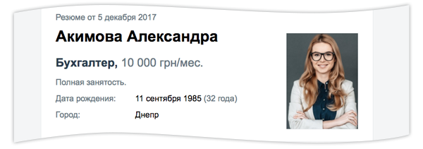
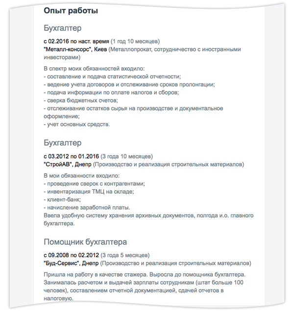
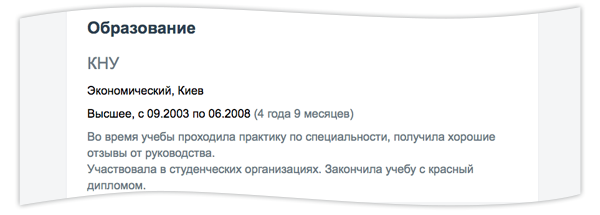
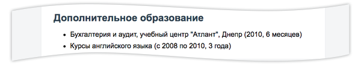
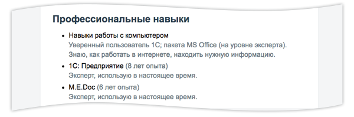
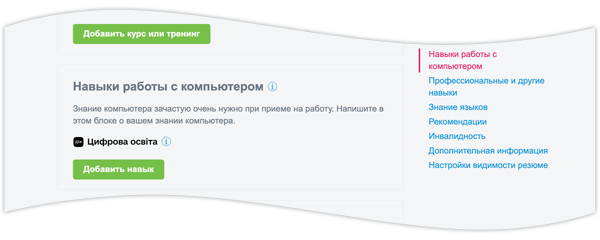
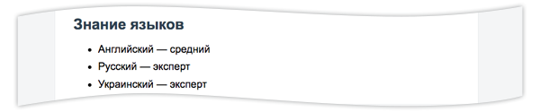
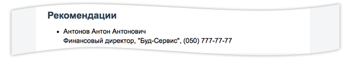
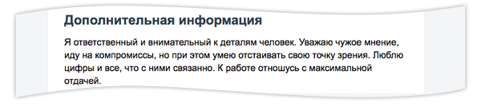

Как написать резюме: образец 2021
1. Укажите должность
Если вы не знаете, как составить резюме, обязательно укажите должность, на которую претендуете. Она же — название резюме. Это самая важная часть вашей профессиональной визитки. Чем конкретнее, тем лучше, например: «Бухгалтер», «Переводчик с английского языка», «Менеджер по закупкам».
2. Добавьте контактные данные
Представьтесь и напишите свой номер телефона. Указывать адрес проживания не стоит, так как вряд ли работодатель станет писать вам письмо. А вот адрес электронной почты написать нужно обязательно. Также не помешает указать город вашего проживания или город, в который вы готовы переехать (если готовы). Здесь же напишите, сколько хотите зарабатывать. Нужно ли вставлять фото? Вообще, это не обязательно, но желательно. Вам бы хотелось увидеть будущего коллегу или подчиненного? Ваш внешний вид может многое о вас рассказать. Поэтому не стесняйтесь, выбирайте удачное фото и смело используйте его в своем резюме.
3. Опишите опыт работы
Максимально подробно опишите опыт работы. Начинать стоит с последнего места работы, а заканчивать — первым. Если на профессиональном пути вам приходилось работать совсем не по той специальности, на которую вы претендуете, эту информацию можно пропустить. Очень важно как можно детальнее описать, что именно входило в ваши обязанности и каких высот вы достигли. Не обязательно использовать сложные конструкции. Опишите своими словами, что делали, чем занимались, что внедрили и осуществили на предыдущей работе. Не забудьте о своих достижениях!
4. Не забудьте про образование
Теперь образование. Сначала напишите о высшем образовании или средне-специальном. Сделать это стоит хотя бы потому, что так ваш будущий работодатель сможет понять, что вы можете довести проект до конца. Хватило же вам мужества, терпения и способностей окончить институт :) Но, разумеется, это также позволит узнать о вас как о специалисте, понять, какими знаниями вы можете обладать.
Не забывайте о дополнительных курсах, тренингах, семинарах, которые вы посетили по специальности. Покажите, что вы не стоите на месте и постоянно совершенствуетесь.
5. Укажите профессиональные навыки
Очень важный блок — профессиональные навыки. Этот пункт — ответ на вопрос «как сделать резюме еще привлекательнее?». Именно из него рекрутер узнает, что же вы умеете делать, в каких программах работать и так далее. Но только не стоит увлекаться. Если не знаете, что писать, пропустите его. Чтобы в нем не появилось банальностей и повторов. И не списывайте у конкурентов, пишите о том, что умеете именно вы! :)
Статус «уверенный пользователь ПК» уже не так ценится работодателями, как раньше. Им требуется больше конкретики в этом вопросе, и результаты теста на цифровую грамотность, который Минцифра запустила в 2020 году, могут ее дать. Пройдите тест на портале «Дія», получите сертификат и добавьте его в свое резюме пусть работодатель убедится, что вы на «ты» с компьютером
Чем больше языков вы знаете, тем лучше. Не скромничайте, указывайте все, что знаете. Вдруг вашему будущему работодателю нужен полиглот.
6. Добавьте рекомендации
Есть возможность добавить контактные данные тех, кто может порекомендовать вас как специалиста, — отлично же! Чем больше рекомендаций, тем лучше.
7. Внесите дополнительную информацию
Ну, и конечно, черкните пару слов о себе. Оставьте коммуникабельность, ответственность, аккуратность, пунктуальность конкурентам. А для своего резюме используйте оригинальную характеристику, которая действительно отвечает вашему внутреннему миру.
Когда резюме уже написаное
Перед тем как разместить резюме, проверьте его по следующим позициям:
- нет ли в нем грамматических и лексических ошибок. Попросите кого-то из друзей прочитать ваше резюме перед отправкой или воспользуйтесь онлайн сервисами по проверке орфографии;
- в описании настоящего места работы должны быть глаголы настоящего времени: работаю, проектирую, управляю;
- в описании предыдущих мест работы должны быть глаголы в прошедшем времени;
- во всем резюме должен быть один стиль повествования, то же касается сокращений — если где-то вы использовали сокращения, то используйте их по всему тексту (хотя лучше отказаться от сокращений и писать наименования полностью);
- формат резюме должен быть удобным для чтения (большие поля, не мелкий шрифт, но и не слишком крупный шрифт, достаточное расстояние между строками и т. п.);
- для печатной версии используйте бумагу белого цвета хорошего качества;
- резюме должно уместиться на одной, максимум на двух страницах;
- при необходимости вы должны суметь подтвердить всю информацию, которую включили в резюме.
Неплохо создать резюме на двух языках. Разумеется, к резюме на иностранном языке предъявляются те же требования относительно оформления, грамотности и стилистического единства, что и к резюме на русском языке.